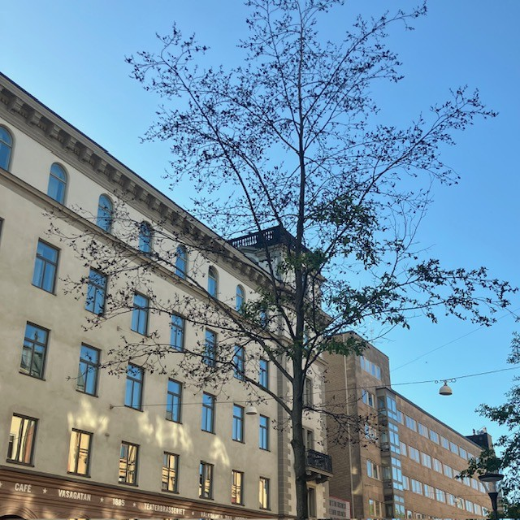

<!DOCTYPE html>
<html>
<head>
    
    <meta http-equiv="content-type" content="text/html; charset=UTF-8" />
    
        <script>
            L_NO_TOUCH = false;
            L_DISABLE_3D = false;
        </script>
    
    <style>html, body {width: 100%;height: 100%;margin: 0;padding: 0;}</style>
    <style>#map {position:absolute;top:0;bottom:0;right:0;left:0;}</style>
    <script src="https://cdn.jsdelivr.net/npm/leaflet@1.9.3/dist/leaflet.js"></script>
    <script src="https://code.jquery.com/jquery-3.7.1.min.js"></script>
    <script src="https://cdn.jsdelivr.net/npm/bootstrap@5.2.2/dist/js/bootstrap.bundle.min.js"></script>
    <script src="https://cdnjs.cloudflare.com/ajax/libs/Leaflet.awesome-markers/2.0.2/leaflet.awesome-markers.js"></script>
    <link rel="stylesheet" href="https://cdn.jsdelivr.net/npm/leaflet@1.9.3/dist/leaflet.css"/>
    <link rel="stylesheet" href="https://cdn.jsdelivr.net/npm/bootstrap@5.2.2/dist/css/bootstrap.min.css"/>
    <link rel="stylesheet" href="https://netdna.bootstrapcdn.com/bootstrap/3.0.0/css/bootstrap-glyphicons.css"/>
    <link rel="stylesheet" href="https://cdn.jsdelivr.net/npm/@fortawesome/fontawesome-free@6.2.0/css/all.min.css"/>
    <link rel="stylesheet" href="https://cdnjs.cloudflare.com/ajax/libs/Leaflet.awesome-markers/2.0.2/leaflet.awesome-markers.css"/>
    <link rel="stylesheet" href="https://cdn.jsdelivr.net/gh/python-visualization/folium/folium/templates/leaflet.awesome.rotate.min.css"/>
    
            <meta name="viewport" content="width=device-width,
                initial-scale=1.0, maximum-scale=1.0, user-scalable=no" />
            <style>
                #map_39e20c93295a01d982174b716b4860ad {
                    position: relative;
                    width: 100.0%;
                    height: 100.0%;
                    left: 0.0%;
                    top: 0.0%;
                }
                .leaflet-container { font-size: 1rem; }
            </style>
        
    <script src="https://cdnjs.cloudflare.com/ajax/libs/leaflet.markercluster/1.1.0/leaflet.markercluster.js"></script>
    <link rel="stylesheet" href="https://cdnjs.cloudflare.com/ajax/libs/leaflet.markercluster/1.1.0/MarkerCluster.css"/>
    <link rel="stylesheet" href="https://cdnjs.cloudflare.com/ajax/libs/leaflet.markercluster/1.1.0/MarkerCluster.Default.css"/>
</head>
<body>
    
    
<!-- Leaflet LocateControl CSS & JS -->
<link rel="stylesheet" href="https://unpkg.com/leaflet.locatecontrol/dist/L.Control.Locate.min.css" />
<script src="https://unpkg.com/leaflet.locatecontrol/dist/L.Control.Locate.min.js"></script>

<script>
document.addEventListener("DOMContentLoaded", function () {
    var map = window._leaflet_map;

    L.control.locate({
        position: 'topleft',
        strings: {
            title: "Visa min plats"
        },
        locateOptions: {
            enableHighAccuracy: true
        }
    }).addTo(map);
});
</script>
    
<script>
document.addEventListener("DOMContentLoaded", function() {
    // Hämta Leaflet-kartan (den finns som 'map_XXXXX' i Folium)
    window.map = Object.values(window).find(v => v instanceof L.Map);

    function onLocationFound(e) {
        var radius = e.accuracy / 2;

        var userIcon = L.divIcon({
            html: '<div style="font-size: 36px;">🚶‍♂️</div>',  
            className: "",
            iconSize: [36, 36]
        });

        var userMarker = L.marker(e.latlng, {icon: userIcon}).addTo(window.map)
            .bindPopup("Du är här").openPopup();

        L.circle(e.latlng, radius).addTo(window.map);
    }

    function onLocationError(e) {
        alert("Kunde inte hämta plats: " + e.message);
    }

    if (window.map) {
        window.map.on('locationfound', onLocationFound);
        window.map.on('locationerror', onLocationError);

        // Starta platsförfrågan
        window.map.locate({setView: false});
    } else {
        console.log("Kunde inte hitta Leaflet-kartan.");
    }
});
</script>
    
            <div class="folium-map" id="map_39e20c93295a01d982174b716b4860ad" ></div>
        
</body>
<script>
    
    
            var map_39e20c93295a01d982174b716b4860ad = L.map(
                "map_39e20c93295a01d982174b716b4860ad",
                {
                    center: [59.3293, 18.0686],
                    crs: L.CRS.EPSG3857,
                    ...{
  "zoom": 15,
  "zoomControl": true,
  "preferCanvas": false,
}

                }
            );

            

        
    
            var tile_layer_b1e16f422d30b14e7f8eae356176f3e9 = L.tileLayer(
                "https://{s}.basemaps.cartocdn.com/rastertiles/voyager/{z}/{x}/{y}{r}.png",
                {
  "minZoom": 0,
  "maxZoom": 20,
  "maxNativeZoom": 20,
  "noWrap": false,
  "attribution": "CartoDB",
  "subdomains": "abcd",
  "detectRetina": false,
  "tms": false,
  "opacity": 1,
}

            );
        
    
            tile_layer_b1e16f422d30b14e7f8eae356176f3e9.addTo(map_39e20c93295a01d982174b716b4860ad);
        
    
            var marker_cluster_0eedef47c759d910aa9ad8de8f87b543 = L.markerClusterGroup(
                {
}
            );
        
    
            marker_cluster_0eedef47c759d910aa9ad8de8f87b543.addTo(map_39e20c93295a01d982174b716b4860ad);
        
    
            var marker_0d655e6649b25271accb8736789e28e4 = L.marker(
                [59.33210074001757, 18.07150116288134],
                {
}
            ).addTo(map_39e20c93295a01d982174b716b4860ad);
        
    
            var div_icon_c8fcff0a9d89b14f0a5446f27cd4a1af = L.divIcon({
  "html": "\n        \u003cdiv style=\"background-color: #91D34C; color: white;\n                        border-radius: 50%; width: 28px; height: 28px;\n                        text-align: center; line-height: 28px;\n                        font-weight: bold;\"\u003e1\u003c/div\u003e\n        ",
  "className": "empty",
});
            marker_0d655e6649b25271accb8736789e28e4.setIcon(div_icon_c8fcff0a9d89b14f0a5446f27cd4a1af);
        
    
        var popup_23f296bb0a0e16f5b3caab794346adef = L.popup({
  "maxWidth": 320,
});

        
            
                var html_f1df5e4b6bfb1dd94181821551291ed2 = $(`<div id="html_f1df5e4b6bfb1dd94181821551291ed2" style="width: 100.0%; height: 100.0%;">     <div style="max-height: 500px; width: 280px; overflow-y: auto; padding: 10px;">                  <h2 style='margin-bottom: 10px;'>1. Kungsträdgården, vid dammen</h2>         <h4 style='color: darkgreen; margin-top: 0;'>Prydnadskörsbär, Prunus ’Accolade’</h4>         <div style='font-size: 15px; line-height: 1.6; text-align: justify;'>       <div style="font-family: Arial, sans-serif; font-size: 15px; line-height: 1.6; text-align: left;">      Det är inte varje dag man får promenera med huvudet i fluffiga rosa moln. Varje vår blir det en nyhet i hela landet när körsbärsträden i Kungsträdgården blommar. Stockholmare och turister vallfärdar för att fotografera denna blomsterfägring av vackert rosa, halvfyllda blommor i slutet av april.      <p>Körsbärsträden planterades 1998, i dubbla rader på båda sidorna av dammen. Träden är en hybrid mellan bergkörsbär (Prunus sargentii) och vårkörsbär (Prunus subhirtella). Den har en smalare krona i ungdomen men blir bredare med tiden, för att till slut få en nästan flat kronuppbyggnad, där grenarna hänger nedåt.</p>      <p>Andra platser i staden där du kan se prydnadskörsbär är på Luma torg i Hammarby Sjöstad.</p>      </div>      </div>         <div style="margin-top: 10px; display: flex; justify-content: center; gap: 8px; flex-wrap: wrap;">             <audio id="audio1" src="1.m4a"></audio>             <a href="javascript:document.getElementsByClassName('leaflet-marker-icon')[15].click();"               style="background-color: #91D34C; color: white; padding: 8px 12px;                       text-decoration: none; border-radius: 6px; display: inline-block;">               ← Föregående             </a>             <a href="javascript:document.getElementById('audio1').play();"               style="background-color: #FFA500; color: white; padding: 8px 12px;                       text-decoration: none; border-radius: 6px; display: inline-block;">               Lyssna             </a>             <a href="javascript:document.getElementsByClassName('leaflet-marker-icon')[1].click();"               style="background-color: #91D34C; color: white; padding: 8px 12px;                       text-decoration: none; border-radius: 6px; display: inline-block;">               Nästa →             </a>         </div>     </div>     </div>`)[0];
                popup_23f296bb0a0e16f5b3caab794346adef.setContent(html_f1df5e4b6bfb1dd94181821551291ed2);
            
        

        marker_0d655e6649b25271accb8736789e28e4.bindPopup(popup_23f296bb0a0e16f5b3caab794346adef)
        ;

        
    
    
                marker_0d655e6649b25271accb8736789e28e4.setIcon(div_icon_c8fcff0a9d89b14f0a5446f27cd4a1af);
            
    
            var marker_d9823eddccf1fa34d7f889740697d9b6 = L.marker(
                [59.33158633411901, 18.07190885862338],
                {
}
            ).addTo(map_39e20c93295a01d982174b716b4860ad);
        
    
            var div_icon_ff1a7243d4c81284a6618c8444e168f6 = L.divIcon({
  "html": "\n        \u003cdiv style=\"background-color: #91D34C; color: white;\n                        border-radius: 50%; width: 28px; height: 28px;\n                        text-align: center; line-height: 28px;\n                        font-weight: bold;\"\u003e2\u003c/div\u003e\n        ",
  "className": "empty",
});
            marker_d9823eddccf1fa34d7f889740697d9b6.setIcon(div_icon_ff1a7243d4c81284a6618c8444e168f6);
        
    
        var popup_c731afcd59676c6a42cf8abad65f68f3 = L.popup({
  "maxWidth": 320,
});

        
            
                var html_e6be8abc941474e47f626ee3b5db73c6 = $(`<div id="html_e6be8abc941474e47f626ee3b5db73c6" style="width: 100.0%; height: 100.0%;">     <div style="max-height: 500px; width: 280px; overflow-y: auto; padding: 10px;">                  <h2 style='margin-bottom: 10px;'>2. Kungsträdgården, vid alléerna</h2>         <h4 style='color: darkgreen; margin-top: 0;'>Skogslind, Tilia X cordata ’Rancho’, selektion av skogslind</h4>         <div style='font-size: 15px; line-height: 1.6; text-align: justify;'>       <div style="font-family: Arial, sans-serif; font-size: 15px; line-height: 1.6; text-align: left;">      Lind är det vanligaste trädet på innerstadens gator. Framför allt på grund av esplanadsystemets utbyggnad under slutet av 1800-talet, men även för att det är lättskött och klarar sig ganska bra i staden. I Kungsträdgården står lindarna i två, dubbelradiga alléer på var sida om parken – Jussi Björlings allé och Birgit Nilssons allé. Träden som står där idag planterades 1996 och 2003–2006.      <p>Benämningen cordata syftar till bladens hjärtform. Linden kan under sommaren avge så kallad honungsdagg – ett sekret som utsöndras av löss som suger växtsaft ur bladen.</p>      <p>Andra platser i staden där du kan se skogslind är på trottoaren vid Hammarby allé.</p>      </div>      </div>         <div style="margin-top: 10px; display: flex; justify-content: center; gap: 8px; flex-wrap: wrap;">             <audio id="audio2" src="2.m4a"></audio>             <a href="javascript:document.getElementsByClassName('leaflet-marker-icon')[0].click();"               style="background-color: #91D34C; color: white; padding: 8px 12px;                       text-decoration: none; border-radius: 6px; display: inline-block;">               ← Föregående             </a>             <a href="javascript:document.getElementById('audio2').play();"               style="background-color: #FFA500; color: white; padding: 8px 12px;                       text-decoration: none; border-radius: 6px; display: inline-block;">               Lyssna             </a>             <a href="javascript:document.getElementsByClassName('leaflet-marker-icon')[2].click();"               style="background-color: #91D34C; color: white; padding: 8px 12px;                       text-decoration: none; border-radius: 6px; display: inline-block;">               Nästa →             </a>         </div>     </div>     </div>`)[0];
                popup_c731afcd59676c6a42cf8abad65f68f3.setContent(html_e6be8abc941474e47f626ee3b5db73c6);
            
        

        marker_d9823eddccf1fa34d7f889740697d9b6.bindPopup(popup_c731afcd59676c6a42cf8abad65f68f3)
        ;

        
    
    
                marker_d9823eddccf1fa34d7f889740697d9b6.setIcon(div_icon_ff1a7243d4c81284a6618c8444e168f6);
            
    
            var marker_f782250299de2803802c6a2944534a48 = L.marker(
                [59.330464464454856, 18.071962502799966],
                {
}
            ).addTo(map_39e20c93295a01d982174b716b4860ad);
        
    
            var div_icon_2820bc36508e3e9da1733fceb85244aa = L.divIcon({
  "html": "\n        \u003cdiv style=\"background-color: #91D34C; color: white;\n                        border-radius: 50%; width: 28px; height: 28px;\n                        text-align: center; line-height: 28px;\n                        font-weight: bold;\"\u003e3\u003c/div\u003e\n        ",
  "className": "empty",
});
            marker_f782250299de2803802c6a2944534a48.setIcon(div_icon_2820bc36508e3e9da1733fceb85244aa);
        
    
        var popup_88ae2e19c1604ffe70ba4c3416e6dcdd = L.popup({
  "maxWidth": 320,
});

        
            
                var html_c3c8e4b3c6ac72c2ff4f452700f96672 = $(`<div id="html_c3c8e4b3c6ac72c2ff4f452700f96672" style="width: 100.0%; height: 100.0%;">     <div style="max-height: 500px; width: 280px; overflow-y: auto; padding: 10px;">                  <h2 style='margin-bottom: 10px;'>3. Kungsträdgården, vid Tehuset</h2>         <h4 style='color: darkgreen; margin-top: 0;'>Skogsalm, Ulmus gla bra</h4>         <div style='font-size: 15px; line-height: 1.6; text-align: justify;'>       <div style="font-family: Arial, sans-serif; font-size: 15px; line-height: 1.6; text-align: left;">      Almarna är planterade i slutet av 1800-talet som en så kallad boskée, en formellt planterad grupp av träd, ofta i rader eller geometriska mönster, som skapar ett avgränsat rum i en park. Idag står Tehuset i den cirkelformade planteringen. Almen var ett av de vanligaste stadsträden i både park- och gatumiljöer innan den allvarliga typen av almsjukan gjorde sitt intåg.      <p>Almen växer i en vasform, med en tidigt uppsplittrad krona och stora, mörkgröna, asymmetriska, sågade blad. Höstfärgen är gyllengul. De blommar på bar kvist under vårvintern med små blommor.</p>      <p>1971 planerade politikerna i Stockholm att bygga en tunnelbaneuppgång till Kungsträdgårdens tunnelbana precis där almarna står. Det blev stora protester som slutade med att almarna fick stå kvar.</p>      </div>      </div>         <div style="margin-top: 10px; display: flex; justify-content: center; gap: 8px; flex-wrap: wrap;">             <audio id="audio3" src="3.m4a"></audio>             <a href="javascript:document.getElementsByClassName('leaflet-marker-icon')[1].click();"               style="background-color: #91D34C; color: white; padding: 8px 12px;                       text-decoration: none; border-radius: 6px; display: inline-block;">               ← Föregående             </a>             <a href="javascript:document.getElementById('audio3').play();"               style="background-color: #FFA500; color: white; padding: 8px 12px;                       text-decoration: none; border-radius: 6px; display: inline-block;">               Lyssna             </a>             <a href="javascript:document.getElementsByClassName('leaflet-marker-icon')[3].click();"               style="background-color: #91D34C; color: white; padding: 8px 12px;                       text-decoration: none; border-radius: 6px; display: inline-block;">               Nästa →             </a>         </div>     </div>     </div>`)[0];
                popup_88ae2e19c1604ffe70ba4c3416e6dcdd.setContent(html_c3c8e4b3c6ac72c2ff4f452700f96672);
            
        

        marker_f782250299de2803802c6a2944534a48.bindPopup(popup_88ae2e19c1604ffe70ba4c3416e6dcdd)
        ;

        
    
    
                marker_f782250299de2803802c6a2944534a48.setIcon(div_icon_2820bc36508e3e9da1733fceb85244aa);
            
    
            var marker_3c1d2ec7ee7b461ae9bbcb9675fb0a89 = L.marker(
                [59.33044257393739, 18.069258836239964],
                {
}
            ).addTo(map_39e20c93295a01d982174b716b4860ad);
        
    
            var div_icon_acd258e3959f53d177ffe630b7b5ceb5 = L.divIcon({
  "html": "\n        \u003cdiv style=\"background-color: #91D34C; color: white;\n                        border-radius: 50%; width: 28px; height: 28px;\n                        text-align: center; line-height: 28px;\n                        font-weight: bold;\"\u003e4\u003c/div\u003e\n        ",
  "className": "empty",
});
            marker_3c1d2ec7ee7b461ae9bbcb9675fb0a89.setIcon(div_icon_acd258e3959f53d177ffe630b7b5ceb5);
        
    
        var popup_fe79f3bc9842269a2e09976c71bdf012 = L.popup({
  "maxWidth": 320,
});

        
            
                var html_6376c087d39d54418752f87bdcfbab94 = $(`<div id="html_6376c087d39d54418752f87bdcfbab94" style="width: 100.0%; height: 100.0%;">     <div style="max-height: 500px; width: 280px; overflow-y: auto; padding: 10px;">                  <h2 style='margin-bottom: 10px;'>4. Jakobsgatan vid Hamburger Börs</h2>         <h4 style='color: darkgreen; margin-top: 0;'>Hybridkörsbär, Prunus X gondouinii ’Schnee’</h4>         <div style='font-size: 15px; line-height: 1.6; text-align: justify;'>       <div style="font-family: Arial, sans-serif; font-size: 15px; line-height: 1.6; text-align: left;">      Det här är ett mindre träd med en först konisk, senare brett rundad och slutligen något tillplattad krona. Det har en mycket rik blomning och blommar på bar kvist i början av maj. Blommorna är rent vita och enkla till något fyllda. Höstfärgerna är sprakande, i gult till orangerött. Träden planterades under 1990-talet.      </div>      </div>         <div style="margin-top: 10px; display: flex; justify-content: center; gap: 8px; flex-wrap: wrap;">             <audio id="audio4" src="4.m4a"></audio>             <a href="javascript:document.getElementsByClassName('leaflet-marker-icon')[2].click();"               style="background-color: #91D34C; color: white; padding: 8px 12px;                       text-decoration: none; border-radius: 6px; display: inline-block;">               ← Föregående             </a>             <a href="javascript:document.getElementById('audio4').play();"               style="background-color: #FFA500; color: white; padding: 8px 12px;                       text-decoration: none; border-radius: 6px; display: inline-block;">               Lyssna             </a>             <a href="javascript:document.getElementsByClassName('leaflet-marker-icon')[4].click();"               style="background-color: #91D34C; color: white; padding: 8px 12px;                       text-decoration: none; border-radius: 6px; display: inline-block;">               Nästa →             </a>         </div>     </div>     </div>`)[0];
                popup_fe79f3bc9842269a2e09976c71bdf012.setContent(html_6376c087d39d54418752f87bdcfbab94);
            
        

        marker_3c1d2ec7ee7b461ae9bbcb9675fb0a89.bindPopup(popup_fe79f3bc9842269a2e09976c71bdf012)
        ;

        
    
    
                marker_3c1d2ec7ee7b461ae9bbcb9675fb0a89.setIcon(div_icon_acd258e3959f53d177ffe630b7b5ceb5);
            
    
            var marker_319dee176ffe5a7c06f59bbc2c6da9c3 = L.marker(
                [59.33065600579097, 18.068572190779687],
                {
}
            ).addTo(map_39e20c93295a01d982174b716b4860ad);
        
    
            var div_icon_c7765be5f9178ebe90a2a7bf9ee2c180 = L.divIcon({
  "html": "\n        \u003cdiv style=\"background-color: #91D34C; color: white;\n                        border-radius: 50%; width: 28px; height: 28px;\n                        text-align: center; line-height: 28px;\n                        font-weight: bold;\"\u003e5\u003c/div\u003e\n        ",
  "className": "empty",
});
            marker_319dee176ffe5a7c06f59bbc2c6da9c3.setIcon(div_icon_c7765be5f9178ebe90a2a7bf9ee2c180);
        
    
        var popup_0d75435b1d15337f76043444cf0d7e71 = L.popup({
  "maxWidth": 320,
});

        
            
                var html_e66da1c5756de182d8a00c5d5a4e2360 = $(`<div id="html_e66da1c5756de182d8a00c5d5a4e2360" style="width: 100.0%; height: 100.0%;">     <div style="max-height: 500px; width: 280px; overflow-y: auto; padding: 10px;">                  <h2 style='margin-bottom: 10px;'>5. Regeringsgatan, mittemot Gallerian</h2>         <h4 style='color: darkgreen; margin-top: 0;'>Mannaask, Fraxinus ornus</h4>         <div style='font-size: 15px; line-height: 1.6; text-align: justify;'>       <div style="font-family: Arial, sans-serif; font-size: 15px; line-height: 1.6; text-align: left;">      I de upphöjda betongkaren på Regeringsgatan planterades mannaaskar i mitten av 1970-talet. Detta lilla och långsamt växande träd har en god förmåga att klara av knappa förhållanden och är friskt grön i färgen. Kronan är samlad och har en rund till oval form. Höstfärgen är gul. I juni blommar träden generöst med vita plymer. Den kåda som utvinns ur träden i odlingar i Sydeuropa används som ett laxermedel, och skiljer sig från den manna som omnämns i andra sammanhang.      <p>Andra platser i staden där du kan se mannaask är på Brunkebergstorg vid Riksbanken och på Mäster Samuelsgatan.</p>      </div>      </div>         <div style="margin-top: 10px; display: flex; justify-content: center; gap: 8px; flex-wrap: wrap;">             <audio id="audio5" src="5.m4a"></audio>             <a href="javascript:document.getElementsByClassName('leaflet-marker-icon')[3].click();"               style="background-color: #91D34C; color: white; padding: 8px 12px;                       text-decoration: none; border-radius: 6px; display: inline-block;">               ← Föregående             </a>             <a href="javascript:document.getElementById('audio5').play();"               style="background-color: #FFA500; color: white; padding: 8px 12px;                       text-decoration: none; border-radius: 6px; display: inline-block;">               Lyssna             </a>             <a href="javascript:document.getElementsByClassName('leaflet-marker-icon')[5].click();"               style="background-color: #91D34C; color: white; padding: 8px 12px;                       text-decoration: none; border-radius: 6px; display: inline-block;">               Nästa →             </a>         </div>     </div>     </div>`)[0];
                popup_0d75435b1d15337f76043444cf0d7e71.setContent(html_e66da1c5756de182d8a00c5d5a4e2360);
            
        

        marker_319dee176ffe5a7c06f59bbc2c6da9c3.bindPopup(popup_0d75435b1d15337f76043444cf0d7e71)
        ;

        
    
    
                marker_319dee176ffe5a7c06f59bbc2c6da9c3.setIcon(div_icon_c7765be5f9178ebe90a2a7bf9ee2c180);
            
    
            var marker_c47f81d961a47d5dc85381eb94df8228 = L.marker(
                [59.330171677731, 18.067939189495995],
                {
}
            ).addTo(map_39e20c93295a01d982174b716b4860ad);
        
    
            var div_icon_d3efdd7653edb510e291a229e4169d37 = L.divIcon({
  "html": "\n        \u003cdiv style=\"background-color: #91D34C; color: white;\n                        border-radius: 50%; width: 28px; height: 28px;\n                        text-align: center; line-height: 28px;\n                        font-weight: bold;\"\u003e6\u003c/div\u003e\n        ",
  "className": "empty",
});
            marker_c47f81d961a47d5dc85381eb94df8228.setIcon(div_icon_d3efdd7653edb510e291a229e4169d37);
        
    
        var popup_d4fe842bc2186a15fd04973da560a790 = L.popup({
  "maxWidth": 320,
});

        
            
                var html_575c0df127be6a088fb4f075aa7e10b0 = $(`<div id="html_575c0df127be6a088fb4f075aa7e10b0" style="width: 100.0%; height: 100.0%;">     <div style="max-height: 500px; width: 280px; overflow-y: auto; padding: 10px;">                  <h2 style='margin-bottom: 10px;'>6. Jakobsgatan, utanför Gallerian</h2>         <h4 style='color: darkgreen; margin-top: 0;'>Kärrek, Quercus palustris</h4>         <div style='font-size: 15px; line-height: 1.6; text-align: justify;'>       <div style="font-family: Arial, sans-serif; font-size: 15px; line-height: 1.6; text-align: left;">      Unga kärrekar har en spikrak, genomgående stam och en konisk kronform. Med tiden breder kronan ut sig och de nedersta grenarna får ett hängande växtsätt. Bladen är djupflikiga och klargrönt glänsande, och får vackra höstfärger. Träden producerar rikligt med ekollon.      <p>Kärrekarna på Jakobsgatan planterades under slutet av 1990-talet.</p>      <p>Andra platser i staden där du kan hitta kärrek är på Eastmanvägen och Olivecronas väg i Sabbatsbergsområdet, där kärrekarna växer så det knakar. Du kan också se kärrekar i Järnvägsparken, bredvid Tegelbacken. De träden har flyttats från Malmtorgsgatan och står i en grupp om fem träd och en solitärt. I Kista dominerar kärreken bland gatuträden.</p>      </div>      </div>         <div style="margin-top: 10px; display: flex; justify-content: center; gap: 8px; flex-wrap: wrap;">             <audio id="audio6" src="6.m4a"></audio>             <a href="javascript:document.getElementsByClassName('leaflet-marker-icon')[4].click();"               style="background-color: #91D34C; color: white; padding: 8px 12px;                       text-decoration: none; border-radius: 6px; display: inline-block;">               ← Föregående             </a>             <a href="javascript:document.getElementById('audio6').play();"               style="background-color: #FFA500; color: white; padding: 8px 12px;                       text-decoration: none; border-radius: 6px; display: inline-block;">               Lyssna             </a>             <a href="javascript:document.getElementsByClassName('leaflet-marker-icon')[6].click();"               style="background-color: #91D34C; color: white; padding: 8px 12px;                       text-decoration: none; border-radius: 6px; display: inline-block;">               Nästa →             </a>         </div>     </div>     </div>`)[0];
                popup_d4fe842bc2186a15fd04973da560a790.setContent(html_575c0df127be6a088fb4f075aa7e10b0);
            
        

        marker_c47f81d961a47d5dc85381eb94df8228.bindPopup(popup_d4fe842bc2186a15fd04973da560a790)
        ;

        
    
    
                marker_c47f81d961a47d5dc85381eb94df8228.setIcon(div_icon_d3efdd7653edb510e291a229e4169d37);
            
    
            var marker_e789a10395e0a8b7a2d03d2b8a57a1b1 = L.marker(
                [59.33005948775691, 18.067386654418506],
                {
}
            ).addTo(map_39e20c93295a01d982174b716b4860ad);
        
    
            var div_icon_ca68c92905d9f2f2e31cde22224ffb2d = L.divIcon({
  "html": "\n        \u003cdiv style=\"background-color: #91D34C; color: white;\n                        border-radius: 50%; width: 28px; height: 28px;\n                        text-align: center; line-height: 28px;\n                        font-weight: bold;\"\u003e7\u003c/div\u003e\n        ",
  "className": "empty",
});
            marker_e789a10395e0a8b7a2d03d2b8a57a1b1.setIcon(div_icon_ca68c92905d9f2f2e31cde22224ffb2d);
        
    
        var popup_b3c56dbe0ada372ff1297b45f2d0a4f7 = L.popup({
  "maxWidth": 320,
});

        
            
                var html_430bb3ec1fac434a3f5891ce6dbaf38b = $(`<div id="html_430bb3ec1fac434a3f5891ce6dbaf38b" style="width: 100.0%; height: 100.0%;">     <div style="max-height: 500px; width: 280px; overflow-y: auto; padding: 10px;">                  <h2 style='margin-bottom: 10px;'>7. Jakobsgatan, korsningen Malmtorgsgatan</h2>         <h4 style='color: darkgreen; margin-top: 0;'>Papegojbuske, Parrotia persica</h4>         <div style='font-size: 15px; line-height: 1.6; text-align: justify;'>       <div style="font-family: Arial, sans-serif; font-size: 15px; line-height: 1.6; text-align: left;">      Papegojbusken är trots sitt namn egentligen ett mindre träd, som kan bli upp till tio meter högt. Dessa träd får en fantastisk höstfärg i orange, rött och lila. Finast färger får trädet på en varm växtplats och efter en varm sommar.      <p>Träden planterades 2019.</p>      <p>Andra platser i staden där du kan se papegojbuske är på Medevigatan och Luntmakargatan.</p>      </div>      </div>         <div style="margin-top: 10px; display: flex; justify-content: center; gap: 8px; flex-wrap: wrap;">             <audio id="audio7" src="7.m4a"></audio>             <a href="javascript:document.getElementsByClassName('leaflet-marker-icon')[5].click();"               style="background-color: #91D34C; color: white; padding: 8px 12px;                       text-decoration: none; border-radius: 6px; display: inline-block;">               ← Föregående             </a>             <a href="javascript:document.getElementById('audio7').play();"               style="background-color: #FFA500; color: white; padding: 8px 12px;                       text-decoration: none; border-radius: 6px; display: inline-block;">               Lyssna             </a>             <a href="javascript:document.getElementsByClassName('leaflet-marker-icon')[7].click();"               style="background-color: #91D34C; color: white; padding: 8px 12px;                       text-decoration: none; border-radius: 6px; display: inline-block;">               Nästa →             </a>         </div>     </div>     </div>`)[0];
                popup_b3c56dbe0ada372ff1297b45f2d0a4f7.setContent(html_430bb3ec1fac434a3f5891ce6dbaf38b);
            
        

        marker_e789a10395e0a8b7a2d03d2b8a57a1b1.bindPopup(popup_b3c56dbe0ada372ff1297b45f2d0a4f7)
        ;

        
    
    
                marker_e789a10395e0a8b7a2d03d2b8a57a1b1.setIcon(div_icon_ca68c92905d9f2f2e31cde22224ffb2d);
            
    
            var marker_ef6f8407d2d1d44f61113bc97e114e16 = L.marker(
                [59.33027839467252, 18.067145255623878],
                {
}
            ).addTo(map_39e20c93295a01d982174b716b4860ad);
        
    
            var div_icon_01f581968501cbc5c403d30a16c2b192 = L.divIcon({
  "html": "\n        \u003cdiv style=\"background-color: #91D34C; color: white;\n                        border-radius: 50%; width: 28px; height: 28px;\n                        text-align: center; line-height: 28px;\n                        font-weight: bold;\"\u003e8\u003c/div\u003e\n        ",
  "className": "empty",
});
            marker_ef6f8407d2d1d44f61113bc97e114e16.setIcon(div_icon_01f581968501cbc5c403d30a16c2b192);
        
    
        var popup_3c21a339bc31e615de4b8664efd52418 = L.popup({
  "maxWidth": 320,
});

        
            
                var html_40cb7c9e396d2eb52a4de59121fa1612 = $(`<div id="html_40cb7c9e396d2eb52a4de59121fa1612" style="width: 100.0%; height: 100.0%;">     <div style="max-height: 500px; width: 280px; overflow-y: auto; padding: 10px;">                  <h2 style='margin-bottom: 10px;'>8. Malmtorgsgatans östra sida</h2>         <h4 style='color: darkgreen; margin-top: 0;'>Magnolia ’Galaxy’</h4>         <div style='font-size: 15px; line-height: 1.6; text-align: justify;'>Denna magnolia blommar med stora rosaröda blommor.</div>         <div style="margin-top: 10px; display: flex; justify-content: center; gap: 8px; flex-wrap: wrap;">             <audio id="audio8" src="8.m4a"></audio>             <a href="javascript:document.getElementsByClassName('leaflet-marker-icon')[6].click();"               style="background-color: #91D34C; color: white; padding: 8px 12px;                       text-decoration: none; border-radius: 6px; display: inline-block;">               ← Föregående             </a>             <a href="javascript:document.getElementById('audio8').play();"               style="background-color: #FFA500; color: white; padding: 8px 12px;                       text-decoration: none; border-radius: 6px; display: inline-block;">               Lyssna             </a>             <a href="javascript:document.getElementsByClassName('leaflet-marker-icon')[8].click();"               style="background-color: #91D34C; color: white; padding: 8px 12px;                       text-decoration: none; border-radius: 6px; display: inline-block;">               Nästa →             </a>         </div>     </div>     </div>`)[0];
                popup_3c21a339bc31e615de4b8664efd52418.setContent(html_40cb7c9e396d2eb52a4de59121fa1612);
            
        

        marker_ef6f8407d2d1d44f61113bc97e114e16.bindPopup(popup_3c21a339bc31e615de4b8664efd52418)
        ;

        
    
    
                marker_ef6f8407d2d1d44f61113bc97e114e16.setIcon(div_icon_01f581968501cbc5c403d30a16c2b192);
            
    
            var marker_c08b7442c586682e76c1bb00b42e8557 = L.marker(
                [59.331404574038345, 18.06636320377362],
                {
}
            ).addTo(map_39e20c93295a01d982174b716b4860ad);
        
    
            var div_icon_9524f1e14eafcdf43f06e72df2955206 = L.divIcon({
  "html": "\n        \u003cdiv style=\"background-color: #91D34C; color: white;\n                        border-radius: 50%; width: 28px; height: 28px;\n                        text-align: center; line-height: 28px;\n                        font-weight: bold;\"\u003e9\u003c/div\u003e\n        ",
  "className": "empty",
});
            marker_c08b7442c586682e76c1bb00b42e8557.setIcon(div_icon_9524f1e14eafcdf43f06e72df2955206);
        
    
        var popup_50758359c733e70dd7ed51898f29c8a6 = L.popup({
  "maxWidth": 320,
});

        
            
                var html_fe96c8b180e94fccc39f0e2ba510a800 = $(`<div id="html_fe96c8b180e94fccc39f0e2ba510a800" style="width: 100.0%; height: 100.0%;">     <div style="max-height: 500px; width: 280px; overflow-y: auto; padding: 10px;">                  <h2 style='margin-bottom: 10px;'>9. Brunkebergstorg</h2>         <h4 style='color: darkgreen; margin-top: 0;'>Magnolia</h4>         <div style='font-size: 15px; line-height: 1.6; text-align: justify;'>       <div style="font-family: Arial, sans-serif; font-size: 15px; line-height: 1.6; text-align: left;">      År 2017 rustade staden upp Brunkebergstorg i samarbete med fastighetsägare för att skapa en bättre mötesplats mitt i city. Platsen är belagd med granithällar och i de upphöjda terrazzocirklarna planterades en blandning av magnolior med olika karaktär.      <p>Wada’s Memory är en hybrid mellan japansk magnolia (Magnolia kobus) och pilbladig magnolia (Magnolia salicifolia). Den blommar med stora, helvita blommor och har blomblad som hänger nedåt.</p>      <p>Rosenmagnolia ’Heaven scent’ är en kulturhybrid mellan yunanmagnolia (Magnolia denudata) och liljemagnolian (Magnolia liliflora). Den blommar med doftande, rosaröda blommor.</p>      <p>Biondi är en av de tidigast blommande magnoliorna. Den får vita blommor med rosa inslag.</p>      </div>      </div>         <div style="margin-top: 10px; display: flex; justify-content: center; gap: 8px; flex-wrap: wrap;">             <audio id="audio9" src="9.m4a"></audio>             <a href="javascript:document.getElementsByClassName('leaflet-marker-icon')[7].click();"               style="background-color: #91D34C; color: white; padding: 8px 12px;                       text-decoration: none; border-radius: 6px; display: inline-block;">               ← Föregående             </a>             <a href="javascript:document.getElementById('audio9').play();"               style="background-color: #FFA500; color: white; padding: 8px 12px;                       text-decoration: none; border-radius: 6px; display: inline-block;">               Lyssna             </a>             <a href="javascript:document.getElementsByClassName('leaflet-marker-icon')[9].click();"               style="background-color: #91D34C; color: white; padding: 8px 12px;                       text-decoration: none; border-radius: 6px; display: inline-block;">               Nästa →             </a>         </div>     </div>     </div>`)[0];
                popup_50758359c733e70dd7ed51898f29c8a6.setContent(html_fe96c8b180e94fccc39f0e2ba510a800);
            
        

        marker_c08b7442c586682e76c1bb00b42e8557.bindPopup(popup_50758359c733e70dd7ed51898f29c8a6)
        ;

        
    
    
                marker_c08b7442c586682e76c1bb00b42e8557.setIcon(div_icon_9524f1e14eafcdf43f06e72df2955206);
            
    
            var marker_fc388181e0154cc7376575186942845e = L.marker(
                [59.33169296794744, 18.06512278247012],
                {
}
            ).addTo(map_39e20c93295a01d982174b716b4860ad);
        
    
            var div_icon_e57039bc37e86825a335244305da5b50 = L.divIcon({
  "html": "\n        \u003cdiv style=\"background-color: #91D34C; color: white;\n                        border-radius: 50%; width: 28px; height: 28px;\n                        text-align: center; line-height: 28px;\n                        font-weight: bold;\"\u003e10\u003c/div\u003e\n        ",
  "className": "empty",
});
            marker_fc388181e0154cc7376575186942845e.setIcon(div_icon_e57039bc37e86825a335244305da5b50);
        
    
        var popup_15bd2932c22defa0b86c0c60be524c61 = L.popup({
  "maxWidth": 320,
});

        
            
                var html_5dce1062e57f1cf4c013fda126f2603a = $(`<div id="html_5dce1062e57f1cf4c013fda126f2603a" style="width: 100.0%; height: 100.0%;">     <div style="max-height: 500px; width: 280px; overflow-y: auto; padding: 10px;">                  <h2 style='margin-bottom: 10px;'>10. Benny Fredrikssons torg</h2>         <h4 style='color: darkgreen; margin-top: 0;'>Turkisk trädhassel, Corylus colurna</h4>         <div style='font-size: 15px; line-height: 1.6; text-align: justify;'>       <div style="font-family: Arial, sans-serif; font-size: 15px; line-height: 1.6; text-align: left;">      I den upphöjda rundeln mellan Kulturhuset och Riksbanken planterades på 1990-talet en turkisk trädhassel. Trädet har äggrunda, svagt flikade, ljusgröna blad och en tydligt genomgående stam med flagig bark. Under vintern pryds det av dekorativa hanhängen och små röda honblommor. Nötterna är ganska stora och sitter samlade i stora, fransiga buketter.      <p>Du kan också hitta turkisk trädhassel på Sankt Göransgatan. Förskolor i det området har rapporterat att uppspelta ekorrar plockar hasselnötter av träden.</p>      </div>      </div>         <div style="margin-top: 10px; display: flex; justify-content: center; gap: 8px; flex-wrap: wrap;">             <audio id="audio10" src="10.m4a"></audio>             <a href="javascript:document.getElementsByClassName('leaflet-marker-icon')[8].click();"               style="background-color: #91D34C; color: white; padding: 8px 12px;                       text-decoration: none; border-radius: 6px; display: inline-block;">               ← Föregående             </a>             <a href="javascript:document.getElementById('audio10').play();"               style="background-color: #FFA500; color: white; padding: 8px 12px;                       text-decoration: none; border-radius: 6px; display: inline-block;">               Lyssna             </a>             <a href="javascript:document.getElementsByClassName('leaflet-marker-icon')[10].click();"               style="background-color: #91D34C; color: white; padding: 8px 12px;                       text-decoration: none; border-radius: 6px; display: inline-block;">               Nästa →             </a>         </div>     </div>     </div>`)[0];
                popup_15bd2932c22defa0b86c0c60be524c61.setContent(html_5dce1062e57f1cf4c013fda126f2603a);
            
        

        marker_fc388181e0154cc7376575186942845e.bindPopup(popup_15bd2932c22defa0b86c0c60be524c61)
        ;

        
    
    
                marker_fc388181e0154cc7376575186942845e.setIcon(div_icon_e57039bc37e86825a335244305da5b50);
            
    
            var marker_1aebcd9eb5eaf7ac769731f8d40a8135 = L.marker(
                [59.331985008098364, 18.061241672472264],
                {
}
            ).addTo(map_39e20c93295a01d982174b716b4860ad);
        
    
            var div_icon_84bab33f69ab6d95cf24171f075b0bc8 = L.divIcon({
  "html": "\n        \u003cdiv style=\"background-color: #91D34C; color: white;\n                        border-radius: 50%; width: 28px; height: 28px;\n                        text-align: center; line-height: 28px;\n                        font-weight: bold;\"\u003e11\u003c/div\u003e\n        ",
  "className": "empty",
});
            marker_1aebcd9eb5eaf7ac769731f8d40a8135.setIcon(div_icon_84bab33f69ab6d95cf24171f075b0bc8);
        
    
        var popup_e2715f8e41699481e92a3599425852cb = L.popup({
  "maxWidth": 320,
});

        
            
                var html_11c06bc977d5b18157adc19f8430bebc = $(`<div id="html_11c06bc977d5b18157adc19f8430bebc" style="width: 100.0%; height: 100.0%;">     <div style="max-height: 500px; width: 280px; overflow-y: auto; padding: 10px;">                  <h2 style='margin-bottom: 10px;'>11. Klarabergsviadukten, utanför Åhléns</h2>         <h4 style='color: darkgreen; margin-top: 0;'>Kinesträd, Koelreuteria paniculata</h4>         <div style='font-size: 15px; line-height: 1.6; text-align: justify;'>       <div style="font-family: Arial, sans-serif; font-size: 15px; line-height: 1.6; text-align: left;">      Kinesträden på Klarabergsviadukten är några av de träd som staden får flest frågor kring. Det är många förbipasserande som nyfiket undrar vad det är för slags träd.      <p>Tidigare stod det lindar på platsen men som inte trivdes alls. De mycket ledsna träden såg ut som att de hade gått en rond med en torktumlare. Det är inte särskilt förvånande då platsen inte gav lindarna några vidare förutsättningar. Det är en varm plats i staden och träden hade ytterst begränsat med rotutrymme i underjordiska lådor, ovanpå tunnelbanans tak.</p>      <p>Kinesträden hamnade här i omgångar efter att tätskiktet till tunnelbanan renoverades i mitten av 2010-talet. Det är ett mindre träd, som kan bli fem till åtta meter högt. En utmaning har varit att hitta fina exemplar som stamträd i plantskolan. Dels för att träden är fröförökade och dels för att de verkar föredra att växa som en buske.</p>      <p>Bladen är vanligen parbladiga och cirka 30 centimeter långa med bronsfärgat lövutspring, och blir sedan mörkgröna. Höstfärgen är brungul till orange. De blommar sent, under juli–augusti, med gula plymer. Träden får frukter under september som dekorativt sitter kvar i träden som kinesiska lyktor. Trädet är ljuskrävande och gillar varma platser.</p>      <p>Andra platser i staden där du kan hitta kinesträd är på Magnus Ladulåsgatan och snart även vid Slussen. Vill man resa lite längre bort finns de på Friisgatan i Malmö och i Dresden i Tyskland.</p>      </div>      </div>         <div style="margin-top: 10px; display: flex; justify-content: center; gap: 8px; flex-wrap: wrap;">             <audio id="audio11" src="11.m4a"></audio>             <a href="javascript:document.getElementsByClassName('leaflet-marker-icon')[9].click();"               style="background-color: #91D34C; color: white; padding: 8px 12px;                       text-decoration: none; border-radius: 6px; display: inline-block;">               ← Föregående             </a>             <a href="javascript:document.getElementById('audio11').play();"               style="background-color: #FFA500; color: white; padding: 8px 12px;                       text-decoration: none; border-radius: 6px; display: inline-block;">               Lyssna             </a>             <a href="javascript:document.getElementsByClassName('leaflet-marker-icon')[11].click();"               style="background-color: #91D34C; color: white; padding: 8px 12px;                       text-decoration: none; border-radius: 6px; display: inline-block;">               Nästa →             </a>         </div>     </div>     </div>`)[0];
                popup_e2715f8e41699481e92a3599425852cb.setContent(html_11c06bc977d5b18157adc19f8430bebc);
            
        

        marker_1aebcd9eb5eaf7ac769731f8d40a8135.bindPopup(popup_e2715f8e41699481e92a3599425852cb)
        ;

        
    
    
                marker_1aebcd9eb5eaf7ac769731f8d40a8135.setIcon(div_icon_84bab33f69ab6d95cf24171f075b0bc8);
            
    
            var marker_c0c042b1106a2971ddc3962e3b17f987 = L.marker(
                [59.331454241393075, 18.0599490761384],
                {
}
            ).addTo(map_39e20c93295a01d982174b716b4860ad);
        
    
            var div_icon_e2ba59a08124cff335aeab124e2d6a2f = L.divIcon({
  "html": "\n        \u003cdiv style=\"background-color: #91D34C; color: white;\n                        border-radius: 50%; width: 28px; height: 28px;\n                        text-align: center; line-height: 28px;\n                        font-weight: bold;\"\u003e12\u003c/div\u003e\n        ",
  "className": "empty",
});
            marker_c0c042b1106a2971ddc3962e3b17f987.setIcon(div_icon_e2ba59a08124cff335aeab124e2d6a2f);
        
    
        var popup_11bc758d587115a150e581b8e0174c2b = L.popup({
  "maxWidth": 320,
});

        
            
                var html_1980704d6f22aa9d1494f906dc07158d = $(`<div id="html_1980704d6f22aa9d1494f906dc07158d" style="width: 100.0%; height: 100.0%;">     <div style="max-height: 500px; width: 280px; overflow-y: auto; padding: 10px;">                  <h2 style='margin-bottom: 10px;'>12. Klara västra kyrkogata</h2>         <h4 style='color: darkgreen; margin-top: 0;'>Korstörne, Gleditsia triacanthos f. inermis</h4>         <div style='font-size: 15px; line-height: 1.6; text-align: justify;'>       <div style="font-family: Arial, sans-serif; font-size: 15px; line-height: 1.6; text-align: left;">      Utformningen på platsen flörtar lite med miniparken Paley park i New York där en dunge ljusgrön korstörne står insprängd mellan skyskraporna.      <p>Korstörnet är en värmegynnad och ljusälskande pionjärart och ett av de vanligaste gatuträden i östra USA. De beskrivs ibland som ”torgträd”, det vill säga träd som får blad lite senare på året. Träden skymmer därför inte vårsolen, samtidigt som ett skirt lövverk senare ger en behaglig skugga under högsommaren.</p>      <p>Under hösten får träden fina, gula höstfärger och dekorativa ärtskidor som kan sitta kvar när träden är avlövade. ”Inermis” är latin för obeväpnad, vilket innebär att de här träden inte har de spetsiga och vassa utskott, så kallade tornar, som skyddar mot betande djur och som torde vara varje arborists mardröm.</p>      </div>      </div>         <div style="margin-top: 10px; display: flex; justify-content: center; gap: 8px; flex-wrap: wrap;">             <audio id="audio12" src="12.m4a"></audio>             <a href="javascript:document.getElementsByClassName('leaflet-marker-icon')[10].click();"               style="background-color: #91D34C; color: white; padding: 8px 12px;                       text-decoration: none; border-radius: 6px; display: inline-block;">               ← Föregående             </a>             <a href="javascript:document.getElementById('audio12').play();"               style="background-color: #FFA500; color: white; padding: 8px 12px;                       text-decoration: none; border-radius: 6px; display: inline-block;">               Lyssna             </a>             <a href="javascript:document.getElementsByClassName('leaflet-marker-icon')[12].click();"               style="background-color: #91D34C; color: white; padding: 8px 12px;                       text-decoration: none; border-radius: 6px; display: inline-block;">               Nästa →             </a>         </div>     </div>     </div>`)[0];
                popup_11bc758d587115a150e581b8e0174c2b.setContent(html_1980704d6f22aa9d1494f906dc07158d);
            
        

        marker_c0c042b1106a2971ddc3962e3b17f987.bindPopup(popup_11bc758d587115a150e581b8e0174c2b)
        ;

        
    
    
                marker_c0c042b1106a2971ddc3962e3b17f987.setIcon(div_icon_e2ba59a08124cff335aeab124e2d6a2f);
            
    
            var marker_f77f3b0f6dacdbe5d68443e1ccd22123 = L.marker(
                [59.33063625281176, 18.059503681850124],
                {
}
            ).addTo(map_39e20c93295a01d982174b716b4860ad);
        
    
            var div_icon_b33daf51518fd8226c6956cba9fe9528 = L.divIcon({
  "html": "\n        \u003cdiv style=\"background-color: #91D34C; color: white;\n                        border-radius: 50%; width: 28px; height: 28px;\n                        text-align: center; line-height: 28px;\n                        font-weight: bold;\"\u003e13\u003c/div\u003e\n        ",
  "className": "empty",
});
            marker_f77f3b0f6dacdbe5d68443e1ccd22123.setIcon(div_icon_b33daf51518fd8226c6956cba9fe9528);
        
    
        var popup_126cdf1099db5d0efbc902fb0471c1a8 = L.popup({
  "maxWidth": 320,
});

        
            
                var html_b5859c81ab37e98662c61a3ce8949b15 = $(`<div id="html_b5859c81ab37e98662c61a3ce8949b15" style="width: 100.0%; height: 100.0%;">     <div style="max-height: 500px; width: 280px; overflow-y: auto; padding: 10px;">                  <h2 style='margin-bottom: 10px;'>13. Vasagatan, mittemot Centralstationen</h2>         <h4 style='color: darkgreen; margin-top: 0;'>Japansk zelkova, Zelkova serrata</h4>         <div style='font-size: 15px; line-height: 1.6; text-align: justify;'>       <div style="font-family: Arial, sans-serif; font-size: 15px; line-height: 1.6; text-align: left;">      Vasagatan rustades upp 2018–2021 och fick då bredare trottoarer, cykelbanor och nya trädplanteringar.      <p>Zelkovan tillhör almfamiljen och har stora likheter med denna. Växtsättet är brett vasformigt. Bladen är mörkgröna, utdragna med sågade kanter. Höstfärgerna är roströda. De har en slät stam som med tiden spricker upp i dekorativa plattor.</p>      <p>Andra platser i staden där du kan hitta zelkova är vid korsningen Rådmansgatan och Birger Jarlsgatan.</p>      </div>      </div>         <div style="margin-top: 10px; display: flex; justify-content: center; gap: 8px; flex-wrap: wrap;">             <audio id="audio13" src="13.m4a"></audio>             <a href="javascript:document.getElementsByClassName('leaflet-marker-icon')[11].click();"               style="background-color: #91D34C; color: white; padding: 8px 12px;                       text-decoration: none; border-radius: 6px; display: inline-block;">               ← Föregående             </a>             <a href="javascript:document.getElementById('audio13').play();"               style="background-color: #FFA500; color: white; padding: 8px 12px;                       text-decoration: none; border-radius: 6px; display: inline-block;">               Lyssna             </a>             <a href="javascript:document.getElementsByClassName('leaflet-marker-icon')[13].click();"               style="background-color: #91D34C; color: white; padding: 8px 12px;                       text-decoration: none; border-radius: 6px; display: inline-block;">               Nästa →             </a>         </div>     </div>     </div>`)[0];
                popup_126cdf1099db5d0efbc902fb0471c1a8.setContent(html_b5859c81ab37e98662c61a3ce8949b15);
            
        

        marker_f77f3b0f6dacdbe5d68443e1ccd22123.bindPopup(popup_126cdf1099db5d0efbc902fb0471c1a8)
        ;

        
    
    
                marker_f77f3b0f6dacdbe5d68443e1ccd22123.setIcon(div_icon_b33daf51518fd8226c6956cba9fe9528);
            
    
            var marker_60ca277f1f52fb384f4ccbf98c9f1bd5 = L.marker(
                [59.33202738155008, 18.058277626533595],
                {
}
            ).addTo(map_39e20c93295a01d982174b716b4860ad);
        
    
            var div_icon_2fbecac8a3b1db143d2d32bce77b124c = L.divIcon({
  "html": "\n        \u003cdiv style=\"background-color: #91D34C; color: white;\n                        border-radius: 50%; width: 28px; height: 28px;\n                        text-align: center; line-height: 28px;\n                        font-weight: bold;\"\u003e14\u003c/div\u003e\n        ",
  "className": "empty",
});
            marker_60ca277f1f52fb384f4ccbf98c9f1bd5.setIcon(div_icon_2fbecac8a3b1db143d2d32bce77b124c);
        
    
        var popup_b9be757f2eb2c6032462fd9c76471c9f = L.popup({
  "maxWidth": 320,
});

        
            
                var html_2c4772cddd4a2aed67cc691d6626ae88 = $(`<div id="html_2c4772cddd4a2aed67cc691d6626ae88" style="width: 100.0%; height: 100.0%;">     <div style="max-height: 500px; width: 280px; overflow-y: auto; padding: 10px;">                  <h2 style='margin-bottom: 10px;'>14. Vasagatan, korsningen Mäster Samuelsgatan</h2>         <h4 style='color: darkgreen; margin-top: 0;'>Ambraträd, Liquidambar styraciflua ’Worplesdon’</h4>         <div style='font-size: 15px; line-height: 1.6; text-align: justify;'>       <div style="font-family: Arial, sans-serif; font-size: 15px; line-height: 1.6; text-align: left;">      Trädet kommer ursprungligen från USA, men sorten är en engelsk selektion. I början växer trädet som en pelare för att med tiden få en mer oval form. De har spännande, stjärnformiga blad med utdragna spetsar och djupa flikar. Höstfärgerna kan bli slående i aprikos och orange. Båda orden i namnet syftar till den kåda som kan användas som tuggummi, vilket även har gett trädet dess amerikanska namn, ”Sweetgum”.      </div>      </div>         <div style="margin-top: 10px; display: flex; justify-content: center; gap: 8px; flex-wrap: wrap;">             <audio id="audio14" src="14.m4a"></audio>             <a href="javascript:document.getElementsByClassName('leaflet-marker-icon')[12].click();"               style="background-color: #91D34C; color: white; padding: 8px 12px;                       text-decoration: none; border-radius: 6px; display: inline-block;">               ← Föregående             </a>             <a href="javascript:document.getElementById('audio14').play();"               style="background-color: #FFA500; color: white; padding: 8px 12px;                       text-decoration: none; border-radius: 6px; display: inline-block;">               Lyssna             </a>             <a href="javascript:document.getElementsByClassName('leaflet-marker-icon')[14].click();"               style="background-color: #91D34C; color: white; padding: 8px 12px;                       text-decoration: none; border-radius: 6px; display: inline-block;">               Nästa →             </a>         </div>     </div>     </div>`)[0];
                popup_b9be757f2eb2c6032462fd9c76471c9f.setContent(html_2c4772cddd4a2aed67cc691d6626ae88);
            
        

        marker_60ca277f1f52fb384f4ccbf98c9f1bd5.bindPopup(popup_b9be757f2eb2c6032462fd9c76471c9f)
        ;

        
    
    
                marker_60ca277f1f52fb384f4ccbf98c9f1bd5.setIcon(div_icon_2fbecac8a3b1db143d2d32bce77b124c);
            
    
            var marker_873432c04eabd76b3b497f13ddb96fda = L.marker(
                [59.33347646357579, 18.057035321554384],
                {
}
            ).addTo(map_39e20c93295a01d982174b716b4860ad);
        
    
            var div_icon_1d033daa7ab5da46ce0c64ee9c8eacb0 = L.divIcon({
  "html": "\n        \u003cdiv style=\"background-color: #91D34C; color: white;\n                        border-radius: 50%; width: 28px; height: 28px;\n                        text-align: center; line-height: 28px;\n                        font-weight: bold;\"\u003e15\u003c/div\u003e\n        ",
  "className": "empty",
});
            marker_873432c04eabd76b3b497f13ddb96fda.setIcon(div_icon_1d033daa7ab5da46ce0c64ee9c8eacb0);
        
    
        var popup_5b377306b1be079f29eb5bc1932b499c = L.popup({
  "maxWidth": 320,
});

        
            
                var html_ea6675aafca2d3530ea9a9f97bd68af8 = $(`<div id="html_ea6675aafca2d3530ea9a9f97bd68af8" style="width: 100.0%; height: 100.0%;">     <div style="max-height: 500px; width: 280px; overflow-y: auto; padding: 10px;">                  <h2 style='margin-bottom: 10px;'>15. Vasagatan, korsningen Gamla Brogata</h2>         <h4 style='color: darkgreen; margin-top: 0;'>Rödask, Fraxinus pensylvanica ’Summit’</h4>         <div style='font-size: 15px; line-height: 1.6; text-align: justify;'>       <div style="font-family: Arial, sans-serif; font-size: 15px; line-height: 1.6; text-align: left;">      Det här trädet är en amerikansk selektion av rödask, med ovalt till rundat växtsätt. Trädet har stora och vackert glänsande, gröna blad med en smörgul höstfärg. Trädet är värmegynnat, torktåligt och tål stadsklimatet.      <p>Andra platser i staden där du kan hitta rödask är på Fredriksdalstorget, där den står i kombination med vitask (Fraxinus americana ’Autumn Purple’), och på Torsgatan.</p>      </div>      </div>         <div style="margin-top: 10px; display: flex; justify-content: center; gap: 8px; flex-wrap: wrap;">             <audio id="audio15" src="15.m4a"></audio>             <a href="javascript:document.getElementsByClassName('leaflet-marker-icon')[13].click();"               style="background-color: #91D34C; color: white; padding: 8px 12px;                       text-decoration: none; border-radius: 6px; display: inline-block;">               ← Föregående             </a>             <a href="javascript:document.getElementById('audio15').play();"               style="background-color: #FFA500; color: white; padding: 8px 12px;                       text-decoration: none; border-radius: 6px; display: inline-block;">               Lyssna             </a>             <a href="javascript:document.getElementsByClassName('leaflet-marker-icon')[15].click();"               style="background-color: #91D34C; color: white; padding: 8px 12px;                       text-decoration: none; border-radius: 6px; display: inline-block;">               Nästa →             </a>         </div>     </div>     </div>`)[0];
                popup_5b377306b1be079f29eb5bc1932b499c.setContent(html_ea6675aafca2d3530ea9a9f97bd68af8);
            
        

        marker_873432c04eabd76b3b497f13ddb96fda.bindPopup(popup_5b377306b1be079f29eb5bc1932b499c)
        ;

        
    
    
                marker_873432c04eabd76b3b497f13ddb96fda.setIcon(div_icon_1d033daa7ab5da46ce0c64ee9c8eacb0);
            
    
            var marker_0f410753a004cfb68eef7d7412598229 = L.marker(
                [59.33415188448287, 18.05644586312134],
                {
}
            ).addTo(map_39e20c93295a01d982174b716b4860ad);
        
    
            var div_icon_8117c6e98a7eed1ffb863373737c4c4b = L.divIcon({
  "html": "\n        \u003cdiv style=\"background-color: #91D34C; color: white;\n                        border-radius: 50%; width: 28px; height: 28px;\n                        text-align: center; line-height: 28px;\n                        font-weight: bold;\"\u003e16\u003c/div\u003e\n        ",
  "className": "empty",
});
            marker_0f410753a004cfb68eef7d7412598229.setIcon(div_icon_8117c6e98a7eed1ffb863373737c4c4b);
        
    
        var popup_0c3561bce29641dbfff7a36624505ad5 = L.popup({
  "maxWidth": 320,
});

        
            
                var html_76aaf26fef6e5504e0166032446517ba = $(`<div id="html_76aaf26fef6e5504e0166032446517ba" style="width: 100.0%; height: 100.0%;">     <div style="max-height: 500px; width: 280px; overflow-y: auto; padding: 10px;">                  <h2 style='margin-bottom: 10px;'>16. Vasagatan, korsningen Kungsgatan</h2>         <h4 style='color: darkgreen; margin-top: 0;'>Berlineral, Alnus X spaethii</h4>         <div style='font-size: 15px; line-height: 1.6; text-align: justify;'>       <div style="font-family: Arial, sans-serif; font-size: 15px; line-height: 1.6; text-align: left;">      I naturen står alar ofta på platser där vattentillgången kan ändras mycket över året, till exempel stränder. Det gör att den är väl anpassad till det hårda klimat som innerstaden innebär. Den visar god tillväxt i växtbäddar uppbyggda med makadam, biokol och kompost. Den här alen är en hybrid mellan japansk al (Alnus japonica) och storbladig al (Alnus subcordata). Berlineralen har en rak, genomgående stam och ett friskt, mörkgrönt bladverk. Tyvärr får den inga höstfärger, utan bladen förblir gröna till dess att de faller av.      <p>Andra platser i staden där du kan se berlineral är på Torsgatan och på Sockenvägen vid Sockenplan.</p>      </div>      </div>         <div style="margin-top: 10px; display: flex; justify-content: center; gap: 8px; flex-wrap: wrap;">             <audio id="audio16" src="16.m4a"></audio>             <a href="javascript:document.getElementsByClassName('leaflet-marker-icon')[14].click();"               style="background-color: #91D34C; color: white; padding: 8px 12px;                       text-decoration: none; border-radius: 6px; display: inline-block;">               ← Föregående             </a>             <a href="javascript:document.getElementById('audio16').play();"               style="background-color: #FFA500; color: white; padding: 8px 12px;                       text-decoration: none; border-radius: 6px; display: inline-block;">               Lyssna             </a>             <a href="javascript:document.getElementsByClassName('leaflet-marker-icon')[0].click();"               style="background-color: #91D34C; color: white; padding: 8px 12px;                       text-decoration: none; border-radius: 6px; display: inline-block;">               Nästa →             </a>         </div>     </div>     </div>`)[0];
                popup_0c3561bce29641dbfff7a36624505ad5.setContent(html_76aaf26fef6e5504e0166032446517ba);
            
        

        marker_0f410753a004cfb68eef7d7412598229.bindPopup(popup_0c3561bce29641dbfff7a36624505ad5)
        ;

        
    
    
                marker_0f410753a004cfb68eef7d7412598229.setIcon(div_icon_8117c6e98a7eed1ffb863373737c4c4b);
            
    
            var marker_38a1ac2125207f3b12d7721324ddf2b8 = L.marker(
                [59.33210074001757, 18.07150116288134],
                {
}
            ).addTo(map_39e20c93295a01d982174b716b4860ad);
        
    
            var icon_8e2f996b9c834ec7e92052892fcac9dc = L.AwesomeMarkers.icon(
                {
  "markerColor": "blue",
  "iconColor": "white",
  "icon": "info-circle",
  "prefix": "fa",
  "extraClasses": "fa-rotate-0",
}
            );
        
    
        var popup_a2f27eb8844f37bcbacc019094c6a7b3 = L.popup({
  "maxWidth": "100%",
});

        
            
                var html_dfb45f49b78f551a4fc221bd6825f8a8 = $(`<div id="html_dfb45f49b78f551a4fc221bd6825f8a8" style="width: 100.0%; height: 100.0%;">         <b>Trädpromenaden: från Kungsträdgården till Vasagatan</b><br>         Promenaden är cirka 1,8 kilometer lång och tar ungefär 25 minuter att gå i lugn takt.         Du kan följa hela sträckan eller bara besöka enstaka träd längs vägen.     </div>`)[0];
                popup_a2f27eb8844f37bcbacc019094c6a7b3.setContent(html_dfb45f49b78f551a4fc221bd6825f8a8);
            
        

        marker_38a1ac2125207f3b12d7721324ddf2b8.bindPopup(popup_a2f27eb8844f37bcbacc019094c6a7b3)
        ;

        
    
    
                marker_38a1ac2125207f3b12d7721324ddf2b8.setIcon(icon_8e2f996b9c834ec7e92052892fcac9dc);
            
    
            var marker_803c5c5b496e38d4f74257f777efb927 = L.marker(
                [59.33415188448287, 18.05644586312134],
                {
}
            ).addTo(map_39e20c93295a01d982174b716b4860ad);
        
    
            var icon_28ba148e89614b2ab3091fdbce3b56ba = L.AwesomeMarkers.icon(
                {
  "markerColor": "red",
  "iconColor": "white",
  "icon": "flag-checkered",
  "prefix": "fa",
  "extraClasses": "fa-rotate-0",
}
            );
        
    
        var popup_aa8d967fd1eff6bb3d8b1baf7123f0b8 = L.popup({
  "maxWidth": "100%",
});

        
            
                var html_5f9ee2191746c7595a6071d035fe32dd = $(`<div id="html_5f9ee2191746c7595a6071d035fe32dd" style="width: 100.0%; height: 100.0%;">Slut: Vasagatan, korsningen Kungsgatan</div>`)[0];
                popup_aa8d967fd1eff6bb3d8b1baf7123f0b8.setContent(html_5f9ee2191746c7595a6071d035fe32dd);
            
        

        marker_803c5c5b496e38d4f74257f777efb927.bindPopup(popup_aa8d967fd1eff6bb3d8b1baf7123f0b8)
        ;

        
    
    
                marker_803c5c5b496e38d4f74257f777efb927.setIcon(icon_28ba148e89614b2ab3091fdbce3b56ba);
            
</script>
</html>
